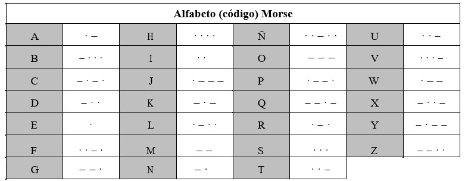
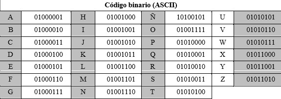
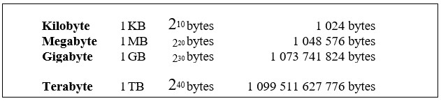
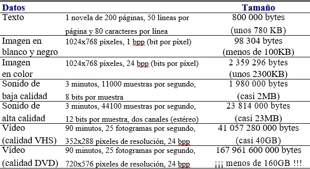

Codificar es representar los elementos de un conjunto mediante los de otro, de forma tal que a cada elemento del primer conjunto le corresponda un elemento distinto del segundo.
Código binario
En el interior de los ordenadores digitales actuales, la información se almacena y se transfiere de un sitio a otro según un CÓDIGO BINARIO.
·El código binario utiliza únicamente dos símbolos diferentes: {0, 1}
·Cualquier dato que introduzcamos en el ordenador o que sea manipulado por él se codifica en su interior por una sucesión de ceros y unos (que físicamente se representa por corrientes eléctricas, campos magnéticos, marcas ópticas...)
· En la entrada y la salida del ordenador, los cambios de código se realizan de forma automática para que no tengamos que introducir ni interpretar la información codificada.
Bits
La unidad más elemental de información en el interior de un ordenador es un valor binario (0 ó 1). Esta unidad elemental de información se denomina BIT (BInary uniT).
Un bit representa la información correspondiente a la ocurrencia de un suceso de dos posibilidades (opciones) distintas.
Cualquier suceso que tenga más de dos posibilidades no podrá representarse con un único bit, ya que faltarían valores para codificar la información. Para que una codificación sea correcta, a cada elemento de un conjunto se ha de asignar un elemento distinto del otro conjunto.
Ejemplo de codificación
Mensaje
“Confirmo asistencia”
Código Morse
- · - · |- - -|- ·|· · - ·|· - ·|- -|- - -| · -· · ·|· ·|· · ·|··-·|-·|- · - ·| · ·|· -
Codificación binaria (ASCII)
Mensaje
01000011 01001111 01001110 01000110 01001001 01010010 01001101 01001111 01000001 01010011 01001001 01010011 01010100 01000101 01001110 01000011 01001001 01000001
Bytes
Usualmente, la información se representa por medio de caracteres. A cada carácter le corresponde un cierto número de bits. Un BYTE es el número de bits necesario para almacenar un carácter.
Para medir la capacidad de almacenamiento del un ordenador se utilizan múltiplos del byte:

Ejemplos

NOTA: Existen técnicas de compresión de datos que permiten almacenar los datos en menos espacio del mostrado en la tabla.